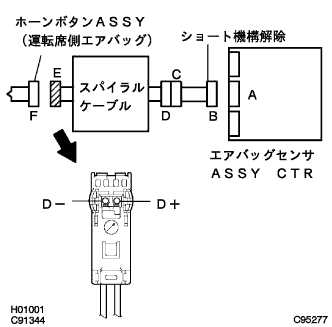
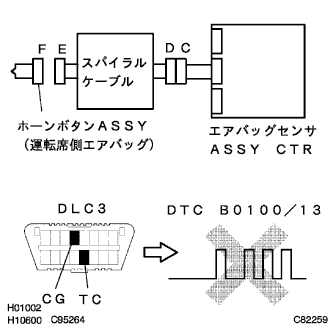
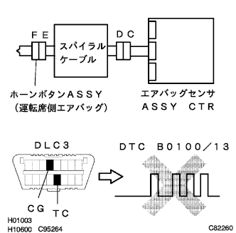
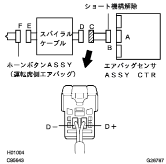
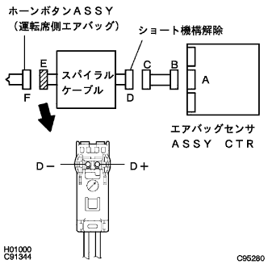

DTC B0100/13 運転席エアバッグ点火回路(D+-D-端子間短絡) |
| DTC No. | DTC検出項目 | 問題発生箇所 |
|---|---|---|
| B0100/13 |
|
|
 参照)参照)
参照)参照)| 手順1 | エアバッグ用コネクター点検 |
バッテリーのマイナスターミナルを切り離し、90秒間待機する。
ホーンボタンASSYからコネクタを切り離す。
ホーンボタンASSY(運転席側エアバッグ)用コネクタに損傷がないか点検する。
|
| ||||
| OK | |
| 手順2 | 運転席エアバッグ点火回路点検（エアバッグセンサASSY CTR-ホーンボタンASSY間） |
|  |
エアバッグセンサASSY CTRからコネクタを切り離す。
コネクタBのショート機構(D+、D-)を解除する。
SST(トヨタエレクトリカルテスター)を使用してコネクタEのD+、D-端子にテスター棒をあて、コネクタB-コネクタE間の抵抗値を点検する。
|
| ||||
| OK | |
| 手順3 | エアバッグ センサASSY点検 |
|  |
エアバッグセンサASSY CTRにコネクタを接続する。
バッテリーのマイナスターミナルを接続し、IGスイッチをONにして60秒間待機する。
SSTを使用してダイアグコードを消去後、再度ダイアグコードを点検する。
ウォーニングランプによるコード読み取りの場合
TaSCANによるコード読み取りの場合
|
| ||||
| OK | |
| 手順4 | 運転席点火系(ホーンボタンASSY)点検 |
|  |
IGスイッチをOFF(LOCK)にする。
バッテリーのマイナスターミナルを切り離し、90秒間待機する。
ホーンボタンASSYにコネクターを接続する。
バッテリーのマイナスターミナルを接続し、IGスイッチをONにして60秒間待機する。
SSTを使用してダイアグコードを消去後、再度ダイアグコードを点検する。
ウォーニングランプによるコード読み取りの場合
TaSCANによるコード読み取りの場合
|
| ||||
| OK | ||
| ||
| 手順5 | インストルメントパネル ワイヤ点検（エアバッグセンサASSY CTR-スパイラルケーブル間） |
|  |
コネクタCとDを切り離す。
SST(トヨタエレクトリカルテスター)を使用してコネクタCのD+、D-端子にテスター棒をあて、コネクタB-コネクタC間の抵抗値を点検する。
|
| ||||
| OK | |
| 手順6 | スパイラル ケーブルSUB-ASSY点検 |
|  |
コネクタDのショート機構(D+、D-)を解除する。
SST(トヨタエレクトリカルテスター)を使用してコネクタＥのD+、D-端子にテスター棒をあて、スパイラルケーブル間の抵抗値を点検する。
|
| ||||
| OK | ||
| ||